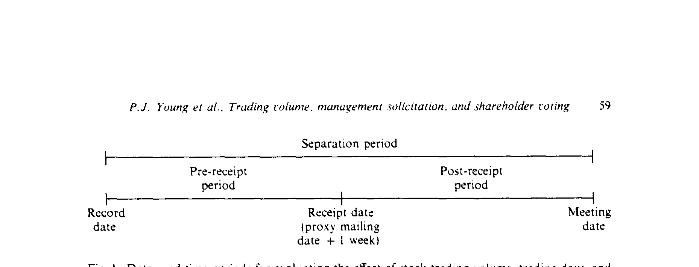
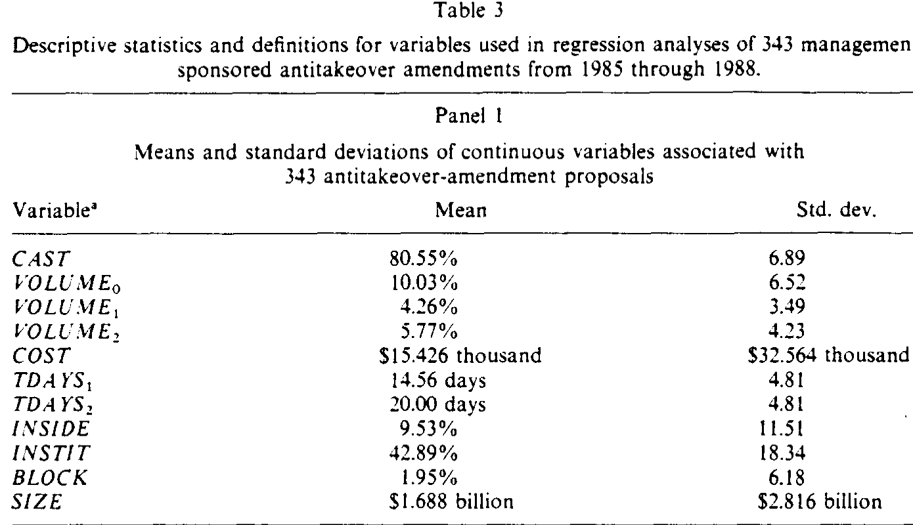
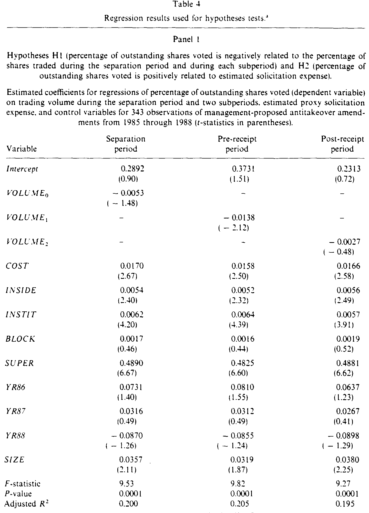
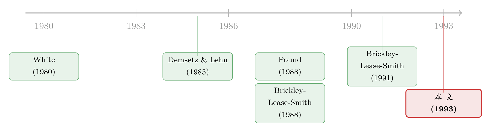

你卖掉了股票，却还攥着那张选票
本文读的是 Young, Millar & Glezen (1993, JFE)：登记日之后每发生一次交易，卖方就把「经济利益」让了出去、却把「投票权」留在了手里——这种错位会压低投票率。作者把「分离期」一刀切成「收到代理材料前」与「收到后」两段，发现压低投票率的力量集中在前半段（成交量、交易天数系数显著为负），而管理层的拉票（solicitation）在后半段把这股力量抵消回来；更妙的是，当议案要求「已发行股份的多数」才能通过时，管理层会悄悄把后半段拉长。
1 一张选票，和它「走失」的主人
先想象一个荒诞却完全合法的场景。
某家公司定下了一个 登记日（record date）——只要你在这天收盘时还在股东名册上，你就有权对即将到来的股东大会上的议案投票。第二天，你把股票卖了。钱货两清，你对这家公司的盈亏已经毫不相干。但那张选票，还在你手里。
于是问题来了：一个已经把船票退掉的人，还会不会认真地为这条船的航向操心？
直觉的答案是：不太会。卖掉股票的人，投票的动力大打折扣——他既懒得研究议案，也懒得寄回那张代理卡（proxy card）。Young、Millar 和 Glezen 这篇 1993 年的 JFE 论文，正是抓住了这个「投票权与经济利益相分离」的缝隙，去回答一个看似冷僻、却直指公司治理要害的问题：投票率（voting turnout）到底是被什么压低的，而管理层又能不能反过来利用这一点？
这件事之所以重要，是因为投票率从来不是中性的。一项反收购议案，如果只要求「已投票股份的多数」就能通过，那低投票率无所谓；可一旦它要求「已发行股份的多数」（majority of shares outstanding）——也就是把没投票的人默认算作反对——那么投票率每掉一个百分点，议案就更难过关一分。换句话说，谁能影响投票率，谁就在悄悄影响议案的生死。
2 一条被切成两段的时间线
要把上面这个故事做成可检验的实证，第一步是把时间轴画清楚。
从登记日到股东大会，论文称之为 分离期（separation period）。但分离期内部并不均匀。关键的制度细节是：美国证监会（SEC）的 Rule 14a-3 规定，管理层（以及职业拉票人）只能在股东收到代理材料之后、到开会之前这段时间里拉票。也就是说，拉票这件事有一道法定的发令枪。
于是作者以「收到代理材料」为界，把分离期切成两段（论文假设代理材料在寄出一周后送达）：
- 收到前期（pre-receipt period）：从登记日到收到日。这段时间里发生的每一次「首次交易」，都在制造投票权与经济利益的分离，却没有任何拉票来挽回。
- 收到后期（post-receipt period）：从收到日到会议日。这段时间里新发生的分离相对较少，而拉票全部集中在这里。

Figure I: Dates and time periods for evaluating the effect of stock tradmg volume. trading days. and
这条被切成两段的时间线，就是全文的发动机。它把两股方向相反的力量——「分离压低投票率」与「拉票抬高投票率」——干净地分配到了两个不同的窗口里。作者一开始也老老实实地检验了 Pound（1988）那句名言「可投票的功能性股份，常常在投票之时就已被大幅削减」：可是放在整个分离期上看，投票率和分离的程度并没有显著关系。
这本该是个令人失望的零结果。但真正关键的一步，恰恰是这次「切成两半」——把整体的沉默拆开，里面藏着两个相互抵消、各自显著的故事。
3 识别策略：把「成交量」和「交易天数」拆开看
接着，一个自然的问题是：怎么度量「分离」？
理想的度量当然是「登记日之后被首次卖出的股份比例」，可惜没有这样的数据。作者退而求其次，用了两个互补的代理变量，而把它们分开正是这篇论文方法上的细腻之处：
- 成交量（trading volume）：分离期及各子期内换手的股份占已发行股份的比例（
VOLUME）。它不在管理层控制之内，直接对应 Pound 关于「所有权与控制权分离」的论证。 - 交易天数（trading days）：各子期的长度，以交易日计（
TDAYS）。它完全由管理层决定——管理层可以在州法允许的上限内，自行设定登记日与会议日的间隔。
两者高度相关（Pearson 相关系数在收到前、收到后、整个分离期分别为 0.42、0.45、0.35，均在 0.0001 水平显著），却代表了同一现象的不同维度：成交量是「分离实际发生了多少」，交易天数是「管理层给分离留了多大的窗口」。这一拆，就把「市场行为」和「管理层选择」分开了。
实证用的是普通最小二乘（ordinary least squares, OLS）。因变量是投票率，但它被零和一百卡住了边界，所以作者沿用 Demsetz & Lehn（1985）的做法做了一个 logit 式的变换，把它解放到整条实数轴上：
$$ y_i = \ln\!\left(\frac{p_i}{100 - p_i}\right) $$
其中 \(p_i\) 是第 \(i\) 项议案上「已发行股份被投票的百分比」。控制变量也都是治理研究里的老熟人：机构、内部人、大宗持有人三类持股比例；超级多数（supermajority）要求的虚拟变量；州法对分离期上限的虚拟变量；年度虚拟变量；以及用股东权益市值的自然对数控制公司规模。标准误还用 White（1980）的异方差稳健形式重做了一遍，结论不变。
4 数据：256 家公司的反收购议案
样本来自投资者责任研究中心（Investor Responsibility Research Center, IRRC）标记为「反收购性质」的章程修订议案，覆盖 1985–1988 年。数据像拼图一样从多个来源拼起来：登记日、寄出日、会议日、股份数、内部人持股、批准规则、拉票费用来自代理声明书；机构持股与注册州来自标普《股票指南》；成交量在 1987 年 4 月之前取自《华尔街日报》、之后取自 CRSP 磁带；州法对分离期的限制取自 Prentice-Hall。最终用于投票分析的子样本是 256 家公司、343 项议案。议案的类型五花八门——公平价格条款、错列董事会（staggered board）、限制股东召集会议的权利等等（论文表 1 给出了完整清单）。
几个能立刻建立直觉的均值：平均约 80.6% 的已发行股份参与了投票（标准差 6.89）；分离期内约 10.03% 的股份换了手（收到前约 4.2%、收到后约 5.8%）；平均分离期 34.6 天（收到前 14.56 天、收到后 20.00 天）；拉票费用均值约 $15,425；内部人、机构、大宗持有人分别持有 9.5%、42.9%、1.9%。值得注意的是，绝大多数议案（256 家公司里有 225 项）要求「已发行股份的多数」才能通过——这正是投票率最要命的那一类。

Table 3
5 主要结果：被切开之后，零结果里跳出了两个故事
然后，反转就来了。
收到前期，成交量的系数为 -0.0138（\(t = -2.12\)），显著为负——交易越多、分离越严重，投票率越低。这正是 Pound 命题在它本该出现的地方现身了。收到后期，成交量的系数只有 -0.0027（\(t = -0.45\)），毫不显著。而整个分离期合在一起，系数 -0.0053（\(t = -1.48\)）同样不显著——两段相互抵消，整体看自然是一片寂静。
换成「交易天数」这把尺子，图景更加干净利落：
- 收到前期的交易天数系数
-0.0130（\(t = -2.94\)），显著为负——窗口每多开一个交易日，分离就多侵蚀一分投票率（支持 H3a）； - 收到后期的交易天数系数
+0.0176（\(t = 3.62\)），显著为正——这段时间越长，拉票越充分，投票率反而越高（支持 H3b）； - 整个分离期的交易天数系数
0.0015（\(t = 0.32\)），照例不显著。

Table 4
与此同时，拉票费用 COST 在所有模型里都显著为正（\(t\) 值在 2.1–2.7 之间），坐实了 H2：花钱拉票确实能把人拉回投票箱。控制变量里，机构持股（\(t \approx 4\)）、内部人持股（\(t \approx 2.4\)）、超级多数要求（系数约 0.49，\(t \approx 6.6\)）与公司规模都显著为正，符合直觉：机构有受托投票的义务、内部人有强烈的投票动机、需要超级多数的议案更被股东当回事。时间趋势则看不出来。
到这里，故事已经讲出了一半：分离确实压低投票率，但它的杀伤集中在「拉票还没开始」的前半段；一旦进入拉票窗口，效果就被抵消甚至逆转。（投票权与经济利益相分离这件事，到了今天有了一个更锋利的名字——空洞投票，关于它的效率账，可参见《投错票的人，反而把治理变好了？》。）
6 真正的反转：管理层动的不是「分离」，是「拉票窗口」
但最精彩的一步在最后。
既然交易天数完全由管理层决定，那么一个精明的管理层应该怎么排兵布阵？逻辑上有两条路：要么缩短收到前期（少制造分离），要么拉长收到后期（多争取拉票），尤其当议案需要「已发行股份的多数」、低投票率会致命的时候。
作者用 H4 来检验这件事：把收到前期、收到后期的交易天数，分别对一个批准规则虚拟变量 REQUIR（等于 1 表示批准基于已发行股份，等于 0 表示基于已投票股份）做回归，并额外控制州法上限。结果是一个漂亮的不对称：
- 收到前期：
REQUIR系数-0.8179（\(t = -0.85\)），不显著——管理层并没有显著地去缩短「分离窗口」； - 收到后期：
REQUIR系数+1.8545（\(t = 1.97\)），显著为正——当议案需要已发行股份多数时，管理层把拉票窗口平均拉长了近 1.85 个交易日。
于是核心贡献浮出水面：管理层确实在操纵时点来影响投票结果，但它选的工具不是「少制造分离」，而是「多给自己留拉票时间」。这很合常理——缩短收到前期会冒着信息披露不充分、甚至触犯程序的风险，而拉长收到后期则是一个干净、可控、且法律明确许可的杠杆。管理层是顺着 SEC 那道发令枪的方向，做了最省力的优化。
（管理层与股东围绕代理程序的这场拉锯，还有更激烈的版本——比如一场被外人点燃的代理权之争，见《一场被「外人」点燃的股东起义》；又比如有人借「砸盘」来左右投票结果，见《明知要亏，她还是砸了盘》。）
7 文献脉络
这条线索的源头，是 Demsetz & Lehn（1985）对公司所有权结构的研究——他们留下的那个 logit 变换，被本文直接借来处理「卡在 0 和 100 之间」的投票率。真正点题的是 Pound（1988）：他研究代理权之争，提出「功能性投票股份常在投票时已被大幅削减」，并发现管理层成功的概率与它能拉长的那段时间负相关。几乎同期，Brickley、Lease & Smith（1988，及 1991 的工作稿）系统地刻画了所有权结构、投票规则与议程控制如何决定反收购议案上的投票——本文的控制变量框架基本承袭于此。

本文站在 Pound 与 BLS 之间的接缝处：它没有去研究你死我活的代理权之争，而是把镜头对准了日常的、管理层主导的反收购议案，并贡献了一个此前无人做出的精细切分——把分离期沿着「拉票的法定起点」一分为二，从而把「分离压低投票」与「拉票抬高投票」这两股纠缠的力量分别识别了出来。方法上，它还用 White（1980）的稳健标准误为结论加了一道保险。
评论与延伸（Q&A + 研究方向）
（a）几个可能的疑问
Q：这跟今天说的「空洞投票（empty voting）」是一回事吗？
是同一枚硬币的两面。空洞投票通常指有人主动借证券借贷、衍生品等手段，让投票权与经济敞口故意脱钩。本文讲的则是被动的、登记日制度天然产生的脱钩——你只是正常卖了股票。机制相同（投票权与经济利益分离），但本文里没有人在「做局」，分离是制度的副产品。
Q：整个分离期看不到关系，会不会只是样本太小或变量没造好？
恰恰相反，零结果反而是亮点。一旦按「收到前/收到后」拆开，两个子期都给出了显著且符号相反的系数（前期 \(t=-2.12\)、$-2.94$，后期 \(t=+3.62\)），整体的零正是两股力量抵消的结果。作者还用异方差稳健标准误复算，推断不变。
Q：成交量和交易天数相关到 0.42–0.45，一起放进模型不会共线吗？
作者并没有把两者塞进同一个回归，而是分别用它们做了两套平行的检验（表 4 的 Panel 1 用成交量、Panel 2 用交易天数）。模型诊断（残差图、条件指数、方差膨胀因子）也未发现 OLS 假设被违反。两个变量给出一致的结论，反而互为稳健性。
Q：这是因果，还是相关？管理层「设定时点」本身是不是内生的？
H1–H3 本质上是相关性证据：它们说明投票率与分离、拉票之间存在符合理论的关联。H4 更接近行为识别——它直接检验管理层是否根据批准规则调整时点，并控制了州法上限这一外生约束。但严格说，批准规则本身可能与公司其他不可观测特征相关，因果解读仍需谨慎。
Q：既然两条路都能用，为什么管理层只拉长后期、不缩短前期？
论文的证据是后期显著、前期不显著（系数 $-0.82$ 但 \(t=-0.85\)）。一个合理的解读是：缩短「收到前期」意味着压缩信息披露与邮寄的缓冲，操作空间小、合规风险高；而拉长「收到后期」是 SEC 明确许可的拉票时间，安全又有效。管理层走了阻力最小的那条路。
Q：拉票费用这个变量，是不是漏算了一大块？
是的，作者诚实地指出：
COST只包含代理声明书里报告的拉票费用，不含公司高管和董事亲自打电话、写信拉票的隐性成本，且无法估计其相对量级。这意味着 H2 的拉票效应若被完整度量，可能比现在更强。
（b）几个可能的研究问题与提案
-
证券借贷数据下的「现代空洞投票」与投票率。【经济故事】今天的「分离」不必再靠登记日，借券市场可以在登记日前后让投票权与经济敞口精准脱钩；机制比 1993 年锋利得多。【可行性】高——借券费率与数量数据（如 Markit/IHS）、13F 持仓、ISS 投票记录都可得，可在登记日前后做事件研究，识别更干净。
-
被动持有（指数基金/ETF）扩张如何改写投票率与拉票的均衡。【经济故事】被动资金天然不交易、却有受托投票义务，等于在「收到前期」几乎不制造分离、又必定投票——这会系统性抬高基准投票率，削弱管理层操纵时点的边际收益。【可行性】高——被动持股比例可测，议案层面投票率可得，可用指数纳入/剔除作为外生冲击。
-
公司债持有人的「同意征集」(consent solicitation) 里有没有同构的时点操纵？【经济故事】债券契约修订同样需要在一个登记日确定持有人、再在一个窗口内征集同意，发行人完全可能像本文的管理层一样，调节窗口长度来左右通过率。【可行性】中——需要逐笔 consent solicitation 的时间表，数据较散，但 TRACE 成交量 + 契约文件可拼，且公司债持有人换手更频繁，分离效应可能更强。
-
外资持有人与跨境投票率的「分离」。【经济故事】ADR、跨境托管链条往往拉长了从登记日到实际投票的环节，外资持有人的「功能性投票股份」流失可能尤其严重。【可行性】中——需要跨境持仓与跨市场投票记录，识别上要处理时区、托管与制度差异，doable 但工作量大。
参考文献
- Brickley, J. A., Bhagat, S., & Lease, R. C. (1985). The impact of long-range managerial compensation plans on shareholder wealth. Journal of Accounting and Economics 7, 115–130.
- Brickley, J. A., Lease, R. C., & Smith, C. W. Jr. (1988). Ownership structure and voting on antitakeover amendments. Journal of Financial Economics 20, 267–291.
- Brickley, J. A., Lease, R. C., & Smith, C. W. Jr. (1991). Voting rules, agenda control, and the economics of voting: Evidence from corporate charter amendments. Unpublished manuscript, University of Rochester.
- Demsetz, H., & Lehn, K. (1985). The structure of corporate ownership: Causes and consequences. Journal of Political Economy 93(6), 1155–1177.
- Pound, J. (1988). Proxy contests and the efficiency of shareholder oversight. Journal of Financial Economics 20, 237–265.
- White, H. (1980). A heteroskedasticity-consistent covariance matrix estimator and a direct test for heteroskedasticity. Econometrica 48(4), 817–838.
- Young, P. J., Millar, J. A., & Glezen, G. W. (1993). Trading volume, management solicitation, and shareholder voting. Journal of Financial Economics 33(1), 57–71.